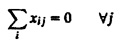
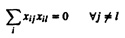
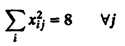
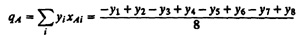
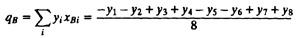

| Previous | Table of Contents | Next |
It is impossible to make anything foolproof because fools are so ingenious.
—Arthur Bloch
If the number of factors is large, a full factorial design may require a large number of experiments, which may be too expensive. In such cases, a fractional factorial design may be used, which requires considerably fewer experiments. For example, a 2k–p design allows analyzing k two-level factors with only 2k–p experiments, where p is a suitably chosen integer. A 2k–1 design requires only half as many experiments as a full factorial 2k design. This design is therefore called a half-replicate of a 2k design. Similarly, a 2k–2 design requires only one-quarter of the experiments required in a full factorial experiments.
Before discussing the theory of fractional factorial designs, it is helpful to look at an example and its result. A sample 27–4 fractional factorial design is shown in Table 19.1. (The preparation of such a sign table is covered in Section 19.1.) A full factorial design in this case would have required 27, or 128, experiments. The design as shown allows us to study seven factors with only eight experiments. The first experiment consists of factors A, B, C, and G being at low level and D, E, and F being at high level. This is indicated by –1 and 1 under respective factors in the first row. The second experiment would consist of A, F, and G at high level and B, C, D and E at low level, and so on.
The key advantage of a 2k full factorial design is the ease with which various effects could be calculated and their contributions to the total variation
| TABLE 19.1 A 27–4 Experimental Design | |||||||
|---|---|---|---|---|---|---|---|
| Experiment No. | A | B | C | D | E | F | G |
| 1 | –1 | –1 | –1 | 1 | 1 | 1 | –1 |
| 2 | 1 | –1 | –1 | –1 | –1 | 1 | 1 |
| 3 | –1 | 1 | –1 | –1 | 1 | –1 | 1 |
| 4 | 1 | 1 | –1 | 1 | –1 | –1 | –1 |
| 5 | –1 | –1 | 1 | 1 | –1 | –1 | 1 |
| 6 | 1 | –1 | 1 | –1 | 1 | –1 | –1 |
| 7 | –1 | 1 | 1 | –1 | –1 | 1 | –1 |
| 8 | 1 | 1 | 1 | 1 | 1 | 1 | 1 |
could be explained. This advantage is the result of the orthogonality of sign vectors representing levels of various factors in different experiment. This advantage is maintained in 2k–p designs by ensuring that the sip vectors are orthogonal. The factor levels (sips in the column) in Table 19.1 were very carefully chosen. Notice that the columns are mutually orthogonal, that is:



The orthogonality allows us to compute the effects as well as their contributions to y’s variation simply by computing inner products. For example, the particular design presented in Table 19.1 allows us to fit the following model to the data:
y = q0 + qAxA + qBxB + qCcC + qDxD + qExE + qFxF + qGxG
Using the orthogonality property of the factor levels chosen, it can be shown that

Similarly,

and so on.
Thus the effects can be easily computed using the inner product of the y-column and various x-columns as we did for the full factorial designs. The formulas for standard deviations of effects and confidence intervals are also similar to that for a full factorial design with k – p factors. In all formulas, we simply need to replace 2k by 2k–p. The following example illustrates this.
| Previous | Table of Contents | Next |